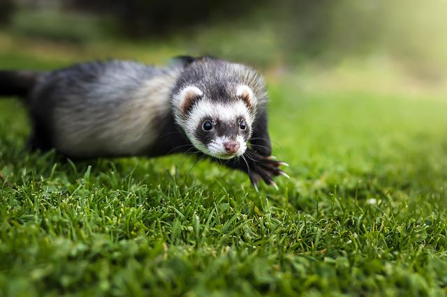
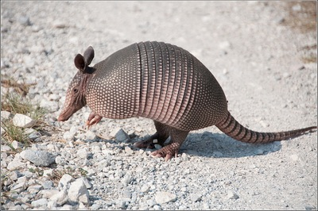

בעלי חיים
אריה
 אריה (שם מדעי: Panthera leo) הוא מין של טורף גדול מהסוג פנתר שבמשפחת החתוליים, והוא השני בגודלו בין בני הקבוצה דמויי חתול, אחרי תת-המין הסיבירי של הטיגריס.
האריה נפוץ בעיקר ביבשת אפריקה, אך גם במדינת גוג'ראט שבהודו. הוא ניזון מאוכלי עשב שונים אותם הוא צד, וכן מפגרים. בתרבות האנושית נחשב האריה סמל לגבורה וכוח, ולכן הוצמד לו הכינוי "מלך החיות". תוחלת חייו בטבע היא בין 12 ל-18 שנים, אך בשבי הוא יכול לחיות עד 30 שנה. שמות נוספים של האריה בשפה העברית הם ליש, שחל, שחץ ולביא.[2] שם נקבת האריה הוא לביאה ואריה צעיר נקרא כפיר.
אריה (שם מדעי: Panthera leo) הוא מין של טורף גדול מהסוג פנתר שבמשפחת החתוליים, והוא השני בגודלו בין בני הקבוצה דמויי חתול, אחרי תת-המין הסיבירי של הטיגריס.
האריה נפוץ בעיקר ביבשת אפריקה, אך גם במדינת גוג'ראט שבהודו. הוא ניזון מאוכלי עשב שונים אותם הוא צד, וכן מפגרים. בתרבות האנושית נחשב האריה סמל לגבורה וכוח, ולכן הוצמד לו הכינוי "מלך החיות". תוחלת חייו בטבע היא בין 12 ל-18 שנים, אך בשבי הוא יכול לחיות עד 30 שנה. שמות נוספים של האריה בשפה העברית הם ליש, שחל, שחץ ולביא.[2] שם נקבת האריה הוא לביאה ואריה צעיר נקרא כפיר.
פיל
 פיל הוא מונח לקבוצה פוליפילטית של שלושה מיני יונקים – פיל סוואנה אפריקני, פיל יער אפריקני ופיל אסייתי – שהם חיות היבשה הגדולות ביותר בעולם והמינים היחידים ששרדו במשפחת הפיליים. בעבר היו מינים נוספים ממשפחה זו, ביניהם הממותה, הפלאולוקסודון והסטגוטטרבלודון שאינם נחשבים לפילים רגילים.
המאפיין הבולט ביותר של הפילים הוא החדק, שבעזרתו הם שותים, אוכלים ומתרחצים. מפיהם בולטים שני חטי שנהב, שהפכו אותם למטרה לציד רב שהביא לפגיעה קשה בהם. הפיל האסייתי ופיל הסוואנה האפריקני מצויים בסכנת הכחדה, ופיל היער האפריקני נמצא בסכנת הכחדה חמורה.
קולו של הפיל מכונה בעברית חִצצור.[1]
פיל הוא מונח לקבוצה פוליפילטית של שלושה מיני יונקים – פיל סוואנה אפריקני, פיל יער אפריקני ופיל אסייתי – שהם חיות היבשה הגדולות ביותר בעולם והמינים היחידים ששרדו במשפחת הפיליים. בעבר היו מינים נוספים ממשפחה זו, ביניהם הממותה, הפלאולוקסודון והסטגוטטרבלודון שאינם נחשבים לפילים רגילים.
המאפיין הבולט ביותר של הפילים הוא החדק, שבעזרתו הם שותים, אוכלים ומתרחצים. מפיהם בולטים שני חטי שנהב, שהפכו אותם למטרה לציד רב שהביא לפגיעה קשה בהם. הפיל האסייתי ופיל הסוואנה האפריקני מצויים בסכנת הכחדה, ופיל היער האפריקני נמצא בסכנת הכחדה חמורה.
קולו של הפיל מכונה בעברית חִצצור.[1]
נחש
 נחשים (שם מדעי: Serpentes) הם זוחלים טורפים חסרי גפיים, בעלי גוף מאורך ומכוסה בקשקשים. נכון למאי 2025, ידועים כ-4,180 מינים של נחשים מ-32 משפחות.[1] נחשים מהווים תת-סדרה של סדרת הקשקשאים, ושייכים לקבוצה האופידיה.
נחשים (שם מדעי: Serpentes) הם זוחלים טורפים חסרי גפיים, בעלי גוף מאורך ומכוסה בקשקשים. נכון למאי 2025, ידועים כ-4,180 מינים של נחשים מ-32 משפחות.[1] נחשים מהווים תת-סדרה של סדרת הקשקשאים, ושייכים לקבוצה האופידיה.
חמוס

חָמוֹס המכונה גם חמוֹס הבית (שם מדעי: Mustela putorius furo; מספר מיני סמוריים דומים מכונים אף הם בשם "חמוס") הוא תת-מין של סמור שבוית כנראה מהחמוס המבאיש. אורך הזכרים יכול להגיע במקרים נדירים למטר מקצה האף עד קצה הזנב. משקלם של הזכרים 1–3 ק"ג ושל הנקבות 0.5–2 ק"ג. החמוס הוא קרניבור מובהק, כלומר הוא תלוי באספקת מזון מהחי.
ארמדיל

ארמדילאים (שם מדעי: Cingulata) היא סדרת יונקים השוכנים בכל יבשת אמריקה, ונודעים בעיקר בשריון הגוף שלהם. חלק מהמינים בסדרה הגיעו לגודל מרשים ונחשבים לחלק מהמגה-פאונה באזור חיותם, כמו הגליפטידוניים והפמפתריים (Pampatheriidae)